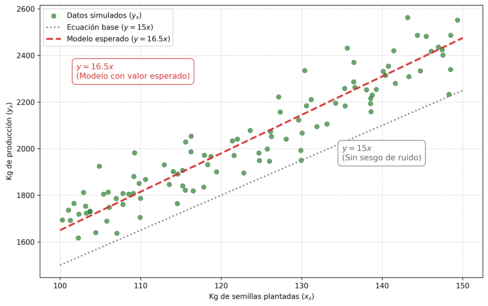
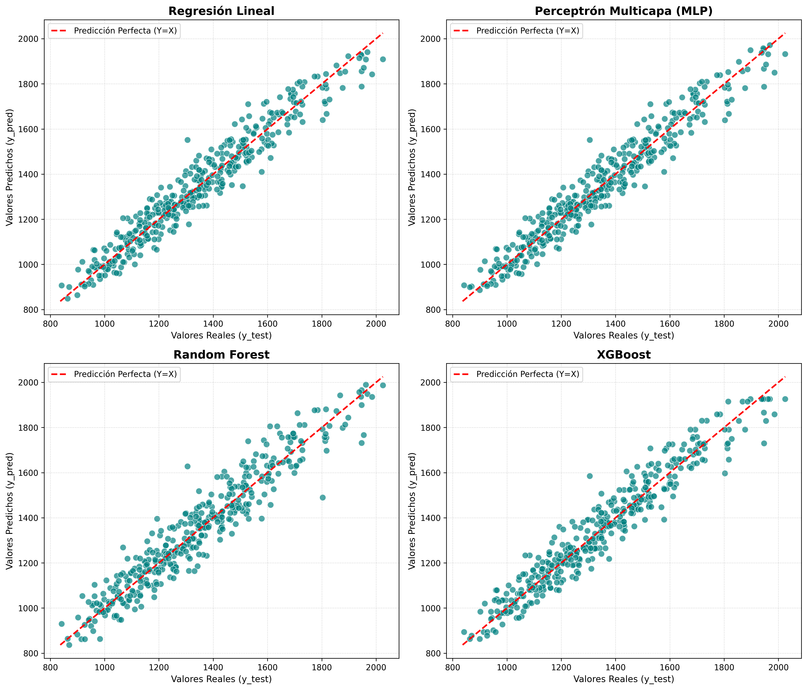
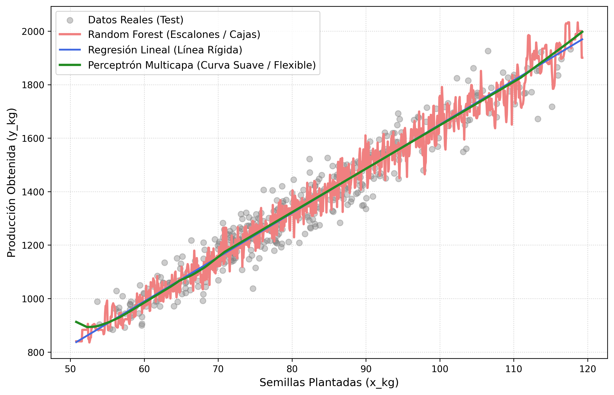
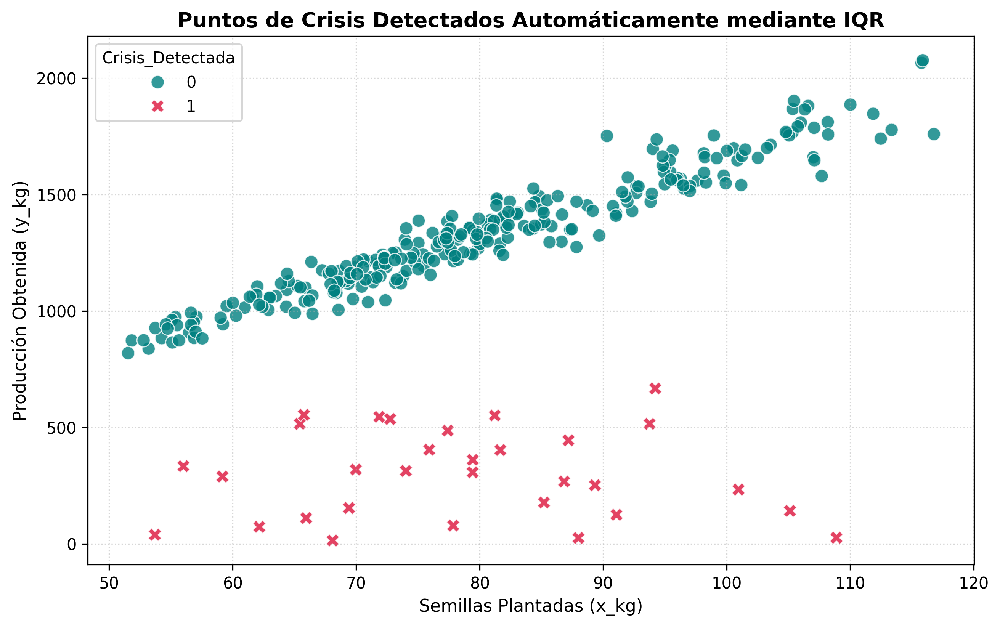
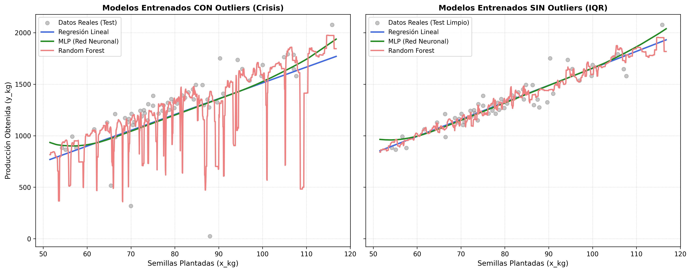
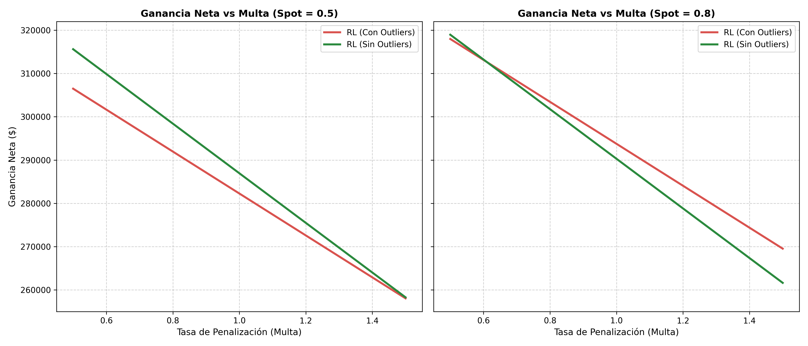

4 Relaciones lineales
Es lineal o nada
Uno de los primeros descubrimientos que hice cuando inicié mi carrera en la publicación científica fue que los modelos más complejos no suelen justificar su complejidad. Una simple regresión lineal suele ser suficiente para la mayoría de los desafíos, y si no lo es, debes rezar para que los datos tan siquiera puedan ser modelados.
4.1 Una corta explicación de mis modelos favoritos
Los modelos que voy a usar en este capítulo van a aparecer en varias ocasiones y vale la pena que tengamos un marco de trabajo común en caso de que no los conozcas. No voy a adentrarme en definiciones profundas porque no es necesario, sólo hace falta entender por qué los seleccioné sobre todos los otros modelos que hay.
Primero tenemos un random forest (bosque aleatorio), se trata de un modelo que utiliza muchos árboles de decisión para obtener un estimado más robusto. Un árbol de decisión toma un conjunto de datos y lo divide para maxizar la predicción correcta de una característica. Por ejemplo, podemos tener un árbol que divide a los clientes de un banco según su riesgo crediticio. Un bosque aleatorio combina varios de estos árboles entregando muestras del dataset al azar para que cada árbol aprenda algo diferente. Luego se toman todos los valores predichos por los árboles y se hace un promedio. El random forest resulta ser una de las mejores opciones para casi cualquier problema. Recomiendo usarlo como base.
El XGBoost es una variación del bosque aleatorio que no me interesa mucho, pero es muy popular, mucha gente toma el XGBoost como modelo base. Yo prefiero el random forest, se supone que el XGBoost tiene unas cuantas ventajas, pero en mis investigaciones no ha hecho la diferencia.
Finalmente, la red neuronal es el modelo definitivo. Voy a usar un perceptron multicapa clásico sólo porque me interesa tener un modelo complejo para que compita con los más simples. Quizá en un capítulo futuro utilice otra arquitectura, pero por ahora no hace falta. Si no conoces el funcionamiento de una red neuronal, generalmente se suele tratar como una caja negra, donde las predicciones no se pueden interpretar del todo.
Sólo queda decir que si ordenamos los modelos por complejidad (qué tanto cómoputo requieren, qué cantidad de datos, y qué tan fácil es intrepretar sus resultados) podemos hacerlo de esta manera: random forest (el más simple), XGBoost y la red neuronal (el más complejo). Con esta presentación es suficiente para seguir adelante.
4.2 El país de las maravillas
Empecemos con un escenario ideal. Tenemos una relación lineal completamente estable donde una variable independiente \(x\) genera una variable dependiente \(y\), que involucra un factor de ruido aleatorio que sigue una distribución normal:
\[\begin{equation} y = \beta x \left( 1 + \frac{\epsilon}{100} \right)\,, \end{equation}\] donde \(\epsilon \sim \mathcal{N}(10, 5^2)\). Para evitar lo abstracto, imaginemos un escenario concreto. Como quiero usar una distribución normal, nuevamente debemos pensar en términos físicos. Vale la pena repetir que sería tonto asumir una distribución normal en un sistema de información.
El escenario que quiero presentarte es el siguiente: tenemos unas plantaciones agrícolas cuya producción queremos predecir para poder cerrar contratos por adelantado. Nuestro problema consiste en que necesitamos una cifra cerrada en cientos de kilos de producción para poder firmar un contrato. Es decir, el comprador nos exige garantizarle \(y_s\) cientos de kilos de producción para poder firmar el contrato. Si no cumplimos, recibimos una multa, pero también podemos producir de más y que ese producto no se venda porque el comprador no tiene la capacidad para manejar el excedente.
Entonces, la única información que tenemos es la cantidad de kilos de semillas que hemos plantado en nuestras tierras. Y la idea es predecir nuestros kilos de producción teniendo como entrada nuestros kilos de semillas sembradas. La producción puede ser cualquier cosa: café, sandías, maíz, arroz; no importa. Ya que tenemos un escenario anclado al mundo físico resulta razonable pensar en una relación lineal donde más kilos de semillas plantadas se traducen en más kilos de producción. Esta relación es la que vamos a modelar con la ecuación que presenté antes: \[\begin{equation} y_s = \beta_s x_s \left( 1 + \frac{\epsilon}{100} \right)\,. \end{equation}\]
Le agrego el subíndice \(s\) porque hacemos referencias a las semillas: la cantidad de producción en kilos \(y_s\) sigue una relación lineal con la cantidad de semillas plantadas \(x_s\). Por supuesto, esta ecuación es desconocida en el mundo real, ésta es la estructura invisible que queremos descubrir usando nuestros conocimientos en ciencias de datos. A este escenario ideal vamos a darle un \(\beta_s\) = 15, es decir, por cada kilo de semillas sembradas, deberíamos obtener 15 kilos de producción. Como el mundo no sigue una línea recta perfecta, necesitamos agregarle ruido. Ahí es donde entra nuestro \(\epsilon\).
Este factor de ruido sigue una distribución normal \(\mathcal{N}(10, 5^2)\), lo que significa que nos va a entregar un valor de entre 5 y 15 la mayor parte del tiempo, y entre 0 y 20 casi el 98% de las veces (cosas de la distribución normal). Este ruido se divide para 100 y se suma uno porque lo que buscamos es tomar la relación lineal perfecta y provocarle una pequeña variación porcentual.
En otras palabras, nuestra producción va a seguir la relación: 15 kilos de producción por cada kilo sembrado, con un ruido aleatorio que hace que la producción varíe entre un 5% y un 10% extra la mayor parte del tiempo. Por ejemplo, sembramos 1 kg hoy, y en seis meses en lugar de producir 15 kg, obtenemos 15.75 kg, que es \(15 + (15\times5\%)\); en otro terreno obtenemos 16.5 kg, que es \(15 + (15 \times 10\%)\); y en el último conseguimos 15.15 kg, que es \(15 + (15 \times 1\%)\). Puedes ver que cada elemento entre paréntesis representa el ruido aleatorio.
Así, obtenemos una variación realista que nos permite modelar esta producción agrícola en base a una relación lineal. Para que puedas digerirlo, te presento una gráfica donde mostramos la cantidad de semillas plantadas vs la producción, todo en kilos, considerando 100 plantaciones diferentes (figura 4.1). Puedes observar que los kilos producidos no son una línea recta, a veces hay más, a veces hay menos, como todo en la vida.

Cada punto en la figura 4.1 representa un terreno diferente donde se plantaron \(x_s\) kg de semillas. También agregué una línea que representa nuestra relación perfecta de 15 kilos producidos por cada kilo plantado. Y finalmente agregué un modelo ajustado donde se sumó el valor esperado a los 15 kg iniciales (\(\hat{y}_s = (15 + 1.5)x_{s} = 16.5x_{s}\)). Este modelo ajustado representa el mejor modelo que podríamos obtener conociendo todo lo que se puede conocer sobre la realidad que estamos modelando. Nos servirá de referencia cuando entrenemos nuestra regresión lineal, pero por ahora podemos ignorarlo, pues esta información es desconocida en el mundo real.
Ahora vamos a una simulación de producción. Controlamos una cantidad \(n\) de hectáreas donde cada una permite sembrar una cantidad variable de semillas. El objetivo de estas variaciones es que los modelos tengan múltiples opciones para inferir la regla general. Finalmente, estos terrenos sólo se pueden cultivar cada 6 meses, así que tampoco es que contamos con una cantidad ilimitada de datos. Vamos a simular 10 años de producción para 100 hectáreas mantiendo estable el comportamiento de los terrenos (no se deterioran). Y esto nos da un total de 2000 registros (\(100 \times 20\)) para entrenar nuestros modelos.
Luego, hacemos un típico proceso de producción donde separamos el 80% de los datos para entrenamiento y el 20% restante para métricas de error. En estas condiciones, podemos evaluar los modelos a través de un gráfico muy ilustrativo. La figura 4.2 muestra una comparativa entre las predicciones de los modelos y los valores reales en el conjunto de pruebas. La línea roja representa una relación perfecta donde los puntos por encima indican que el modelo predijo un valor superior al real y los puntos por debajo que el modelo predijo un valor inferior.

A primera vista, no hay una gran diferencia entre los modelos. Los puntos del random forest se ven algo más dispersos, pero resulta difícil confiar sólo en nuestro ojo. Necesitamos recurrir a algo más concreto. Sin embargo, antes de avanzar quiero destacar los valores que presentan los ejes del gráfico, la producción de nuestros terrenos se encuentra entre los 800 kg y los 2000 kg, lo que implica que una diferencia inferior a 100 kg se puede considerar ruido.
Y es ruido lo que encontramos al medir los índices de error. Los resultados de las métricas más típicas se encuentran en la tabla 4.1. El RMSE y el MAE están en kilos, y ninguna diferencia entre los modelos supera al menos los 100 kg. A pesar de que el modelo lineal y la red neuronal obtuvieron mejores resulados que los bosques aleatorios, la diferencia sigue siendo muy pequeña. Con esto parece claro que no vale la pena elegir otra cosa que no sea un modelo lineal de toda la vida.
| Modelo | RMSE | MAE | \(R^2\) Score |
|---|---|---|---|
| Regresión Lineal | 63.1500 | 50.5687 | 0.9371 |
| Perceptrón Multicapa (MLP) | 63.1714 | 50.5960 | 0.9370 |
| Random Forest | 79.1799 | 62.8786 | 0.9011 |
| XGBoost | 66.4085 | 52.7134 | 0.9304 |
Probemos otro punto de vista. Voy a llenar cada modelo con una línea de puntos para ver cómo se comporta. El gráfico de la figura 4.3 muestra que la red neuronal se esfuerza por comportarse como una regresión lineal, mientras que el árbol aleatorio tiene varios puntos de quiebre y su inestabilidad no representa nada valioso porque el ruido que se produce alrededor de la línea recta es aleatorio y no se puede predecir.

Para finalizar esta sección, veamos cómo luce la ecuación deducida por la máquina para compararla con nuestra realidad oculta: \(\hat{y}_s = 16.46x_{s} + 3.01\). Como puedes ver, esta aproximación es muy cercana a nuestro modelo de conocimiento completo: \(\hat{y}_s = 16.5x_{s}\). Si existiera una relación lineal en el fondo de nuestros datos, en principio, no hay nada mejor para modelarla que una regresión lineal simple. Los modelos más complejos como random forest (o XGBoost) tratan de modelar el ruido, lo cual es imposible y la red neuronal se comporta como una regresión lineal, pero sin su interpretabilidad (es una caja negra). Ahora agreguemos algo de caos al asunto.
4.3 Cuando la crisis toca a tu puerta
Lo más interesante no es analizar qué pasa en las condiciones ideales, sino qué pasa cuando inyectamos algo de caos y destrucción. Por lo tanto, veamos qué pasa cuando el 10% de nuestros ciclos de producción sufren una catástrofe. ¿Por qué el 10%? Es un número arbitrario, pero bajo. Si fuera más alto seguramente implicaría una imprevisibilidad demasiado incómoda para mantenerse en el negocio. No. Nuestra producción es predecible la mayor parte del tiempo, pero nadie puede saberlo todo.
El 10% de las veces, en lugar de tener una correspondencia lineal, vamos a tener enormes caídas. Para ser preciso, voy a colocar una ruleta que va de 0 a 50, esta ruleta determina el porcentaje de la producción final. Es decir, si en un ciclo normal hubiésemos producido 1500 kg, sólo vamos a producir el porcentaje que arroje la ruleta, por ejemplo 20%, así que en una catástrofe, ese 1500 se convierte en \(1500 \cdot 20\% = 300\). Estas catástrofes agregan ruido en nuestros datos, con lo que vamos a tener que lidiar.
La figura 4.4 muestra los nuevos datos. Como puedes observar, las cruces rojas representan momentos en los que la producción sufrió un accidente desastroso. Este accidente puede representar plagas, tempestades, algunas condiciones del suelo, lo que sea. Ahora estos datos forman parte de nuestro dataset y vamos a tener que tomar una decisión importante: ¿los usamos dentro del entrenamiento o no?

Primero, adoptemos la elección más ingenua. Esto puede parecer tonto para alguien con experiencia, pero un principiante puede creer perfectamente que vale la pena pasarle todos los datos a un modelo, porque representan información que el modelo va a poder interpretar y dar un resultado mejor. Sobre todo cuando uno no entiende la naturaleza de modelos complejos como una red neuronal. Parece que estas redes hacen magia, así que mejor pasémosle todo.
La siguiente opción es eliminar estos puntos extremos porque sabemos que son ruido sin significado que podamos interpretar. No hay información en ellos sobre la relación que existe entre semillas plantadas y producción obtenida, son resultado del azar inevitable de la vida. En este caso, para eliminar los puntos voy a usar la técnica IQR, lo que hacemos es tomar el rango intercuartil y lo usamos para definir un límite inferior. Todo lo que esté debajo del \(\text{límite} = Q_1 - 1.5\cdot \mathrm{IQR}\) se considera un outlier que debemos eliminar. Ahora vamos a ver una comparación entre los modelos entrenados con ruido (conservando los valores extremos) y sin ruido.

La figura 4.5 contiene el comportamiento de los modelos entrenados con outliers a la izquierda y los modelos entrenados con datos limpios a la derecha. Se observa que el ruido perjudica especialmente al bosque aleatorio. Ya que un bosque trata de fragmentar el espacio para agrupar los puntos, los outliers hacen que haya segmentos donde el bosque predice valores extremadamente bajos. Recordemos que estas caídas de producción no se pueden predecir, así que usar un modelo que predice valores tan bajos para una cantidad \(x\) de semillas implica jugar con fuego.
Otra consecuencia de usar outliers es que las rectas generadas por la regresión lineal y la red neuronal tienen una pendiente menos pronunciada y un corte en el eje \(y\) más bajo. Sus algoritmos de optimización tratan de minimizar la distancia que existe entre la predicción y el valor real, así que bajan todas las predicciones para poder acercarse a los valores extremos. Por lo tanto, usar outliers en el entrenamiento perjudica todas las predicciones a cambio de nada. La dificultad está en entender qué es ruido y qué sí contiene información valiosa. Para llegar a ese nivel de entendimiento, necesitamos conocer la naturaleza de los datos que estamos analizando. Los dueños del negocio, o algunos expertos en la industria, te pueden dar una mano acerca de qué no es normal. También existen análisis de anomalías automáticos, pero no vamos a entrar en ello, lo que nos interesa es que no importa qué tan complejo sea el modelo, agregar más datos por si acaso no es una buena idea.
Ahora, vamos a empujar esto un poco más. Supongamos que, como hoy está de moda hacer todo con un agente LLM, como Claude o Chat GPT, alguien le dice: tengo este dataset, entrenemos una regresión lineal y pongamos el modelo en producción. Entonces el LLM toma todos los datos, con todo y outliers, y coloca el modelo en producción. Lo que puede pasar cuando involucramos decisiones de negocio quizá te sorprenda, a mí me sorprendió, pues un modelo sucio puede superar a uno limpio en ciertas condiciones.
Establezcamos cómo funciona el negocio. Tenemos nuestra producción agrícola que maneja unos cientos de kilos cada ciclo. La manera de vender nuestra producción es a través de contratos que prometen una cantidad fija por adelantado. Los contratos sólo aceptan cientos de kilos cerrados. Entonces es imposible prometer 102 kg, sólo podemos prometer entregar 100 kg. También, vamos a vender a 10 dólares el kilo en el contrato, y sale más rentable esto que vender a último minuto (para empezar, que sea un 65% del valor del kilo en un contrato, es decir: \(\$6.50\)), digamos que estamos presionados porque el producto se arruina con facilidad. Por otro lado, si prometemos \(\hat{y}_{s}\) kilos en el contrato, y no cumplimos, pagamos una multa equivalente al valor que hubiéramos recibido por esa cantidad incumplida. Por ejemplo, si nos faltó 30 kg, y el contrato está a \(\$10\) el kilo, debemos pagar \(\$300\) por nuestro incumplimiento.
Finalmente, el cómo tomamos la decisión de cuánto comprometer en el contrato es que vemos la predicción del modelo lineal y redondeamos el valor hacia abajo. Por ejemplo, si el modelo dice que vamos a producir 125 kg, vamos a prometer 100 kg para el contrato, si hay un excedente, lo vamos a vender a último minuto (mercado spot) con un valor inferior. Si el modelo predice 1578 kg, prometemos 1500 kg, redondeamos hacia abajo, muy simple. Veamos los resultados.
| Concepto / Métrica | Con Outliers | Sin Outliers | Diferencia (\(\Delta\)) |
|---|---|---|---|
| Métricas de Volumen | |||
| Volumen Contratado | 36,000.0 kg | 39,600.0 kg | +3,600.0 kg |
| Déficit Total (Faltante) | 4,842.8 kg | 5,731.0 kg | +888.2 kg |
| Excedente Total (Sobrante) | 3,826.6 kg | 1,114.9 kg | -2,711.7 kg |
| Flujos Monetarios ($) | |||
| (+) Ingreso por Contratos | $311,572.35 | $338,689.57 | +$27,117.22 |
| (+) Ingreso Venta Spot | $24,872.88 | $7,246.68 | -$17,626.20 |
| (-) Pago Total en Multas | $48,427.65 | $57,310.43 | +$8,882.78 |
| (=) Ganancia Neta | $288,017.58 | $288,625.83 | +$608.25 |
Parámetros Base: Precio Contrato = $10.00/kg; \(\text{Tasa de Multa} = 1.00\times \text{Precio Contrato}\) ($10.00/kg); \(\text{Precio Spot} = 0.65\times \text{Precio Contrato}\) ($6.50/kg).
La ganancia neta, junto a otros datos del experimento, se encuentra en la tabla 4.2. El modelo limpio gana más dinero, pero la diferencia no es tan grande. Claro, $608.25 es más que un sueldo básico en Ecuador (2026), pero considerando que la ganancia de ambos modelos es de más de 288 mil, la diferencia puede ignorarse. ¿Entonces no importa tener el modelo sucio trabajando? Bueno, analicemos qué está pasando.
El modelo sucio estima unos valores más bajos para todos los valores de entrada. En la tabla puede verse que los kilos totales comprometidos para contrato son menos que en el modelo limpio. Sin importar qué valor ingresemos, el modelo siempre va a predecir un valor inferior, por lo tanto, se compromete menos y tiene menos ventas a mejor precio. Por otro lado, al ver el déficit, es decir, la cantidad de kilos que prometió y no cumplió, el modelo sucio también tiene una cantidad inferior. Lógico, si comprometes menos, cuando suceda un accidente vas a pagar una multa más pequeña. Y si vemos los flujos de dinero, el modelo limpio gana más dinero en contratos y paga más en multas, pero sigue estando mejor porque la diferencia entre el precio de contrato y la venta de emergencia (spot) hace que comprometerse con más producción en el contrato salga más rentable.
Ahora, ¿qué pasa si variamos los valores de venta spot y la multa? ¿Existe un escenario donde el modelo sucio gane más dinero? Pues claro. Para entender el asunto utilicé dos valores para el precio de venta spot y una línea de puntos para la variación de la multa. Primero vendemos el sobrante al 50% del precio del valor de contrato y luego lo vendemos al 80%.

La figura 4.6 muestra estos dos escenarios uno al lado del otro. El el eje \(x\) representa el valor de la multa, lo hago variar desde el 50% de valor del contrato hasta un 150%. Tengo entendido que estas multas son posibles en industrias donde un retraso al entregar la materia prima conlleva una catástrofe en toda la línea de producción. El cliente es muy sensible a los retrasos. La línea roja representa el modelo sucio y la línea verde el modelo limpio. Mientras la línea verde esté por encima de la roja, podemos decir que el modelo limpio resulta más rentable.
Como puedes ver, el valor de la multa y el precio de venta spot tienen un peso muy importante a la hora de evaluar los resultados de los modelos. Si somos capaces de vender el producto a última hora a un 80% de su valor (gráfico derecho), tomar un modelo con outliers nos ayuda, qué absurdo, ¿por qué pasa esto? Porque el modelo con outliers baja de manera sistemática sus predicciones, así que se reduce el incumplimiento de contratos e incrementa el producto disponible para venta spot. Es más importante reducir el valor pagado en la multa, así que un modelo más conservador se lleva la victoria.
Con esto, resulta fácil imaginar que alguien puede implementar un modelo base, completamente ciego a los datos, sin mayor análisis, y tener un buen negocio, porque la suerte hace que ese modelo conservador obtenga mejores resultados que uno que usa datos limpios. Sin embargo, si las cosas cambian, por ejemplo, si el valor de venta a última hora se reduce al 50% (gráfico izquierdo), entonces el modelo limpio siempre derrota al modelo conservador. Recordemos que el modelo conservador deja mucho producto fuera de los contratos que necesita venderse con rapidez. Además, en este caso sólo tenemos outliers hacia abajo, pero si hubiera outliers hacia arriba, una regresión lineal seguro colapsaría.
Con este análisis cerramos el capítulo. Quería introducir unos pocos pasos más allá de la comparación de modelos para difundir un estilo de pensamiento que aprendí del maestro Taleb. Es más importante analizar las consecuencias de las decisiones que tomamos en base a las predicciones que hacemos. Queremos obtener lo que anhelamos, no tener la razón.
Me despido de este capítulo dejando otras preguntas interesantes que podrías investigar: ¿Qué técnica podríamos aplicar para tener una posición conservadora en un modelo limpio? ¿Qué pasa si no tenemos tantos registros o si cambia el comportamiento del suelo? (Con menos datos la red neuronal deja de funcionar). ¿Y cómo podríamos usar los outliers para beneficio de nuestro negocio?